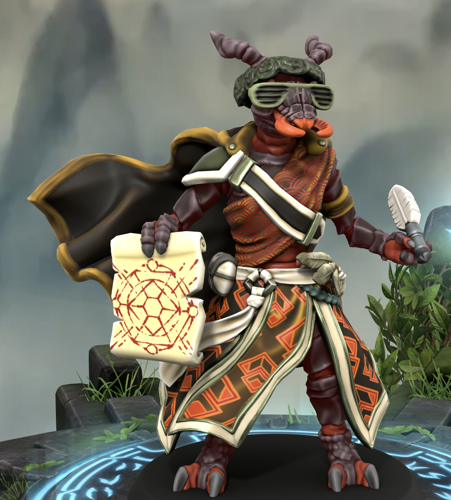
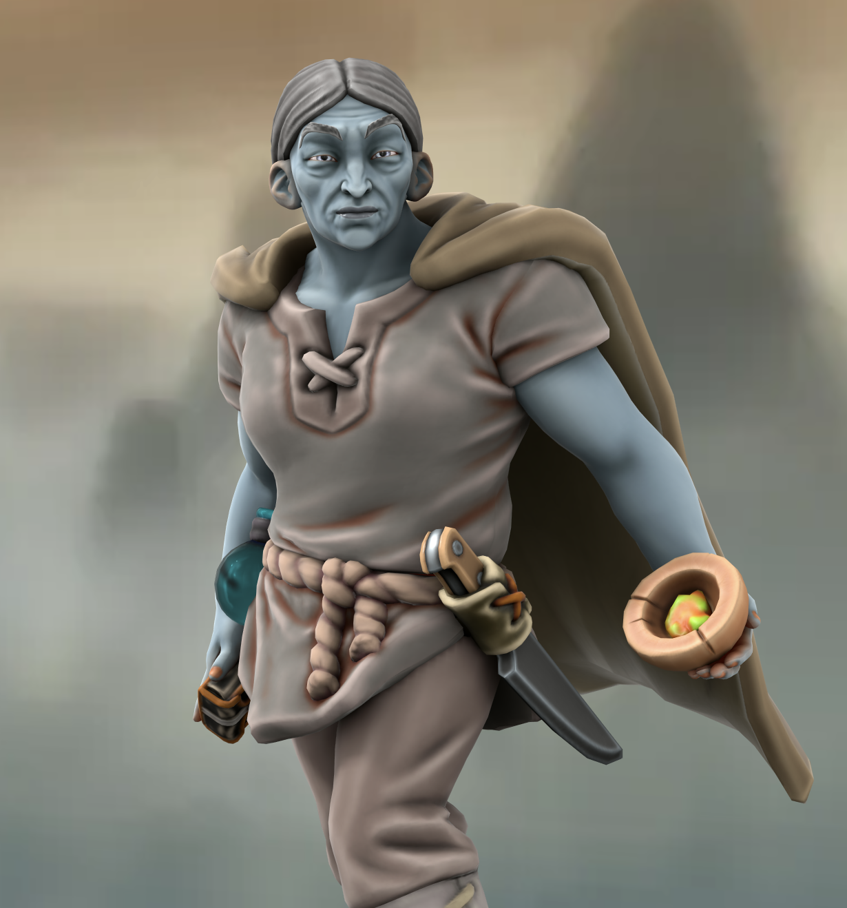
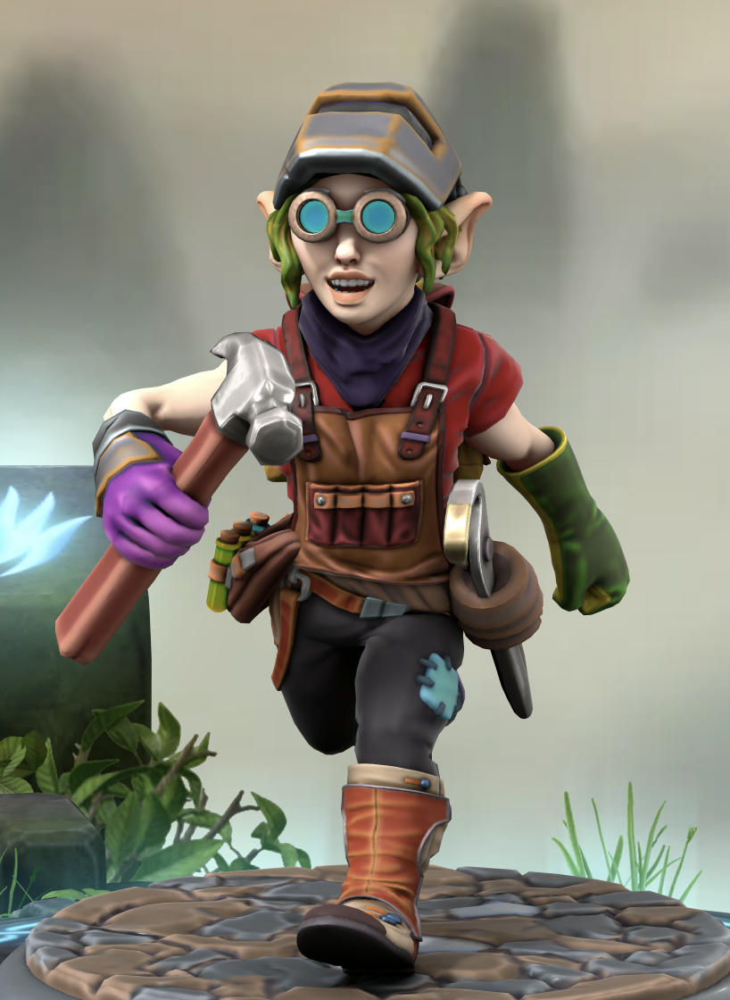

Index
Between five and thirty years ago (depending on what plane you're from) there was a massive arcane cataclysm called the Spellplague that caused all magic to stop functioning. Many of the most advanced mages and healers perished as a wave of blue fire swept the realms. Cities fell from the sky, planes crashed into one another, rifts opened to the Hells and the Abyss as fiends of all sorts took advantage of the chaos.
As time passed, magic seemed to slowly return. Magic, which some call the Weave, is an arcane tapestry into which some mortals are able to tap. Whether the magic presents as gifts from the deities, a connection to nature, a bond with an otherworldly entity, or the reward after years of practice and study, it has only begun to express itself in the past two decades as the worlds began to heal from the Spellplague.
Some people are able to reconnect with magic they lost during the years of chaos, others have developed power when they never had any before.
| Image4 | Column Name | "" + subrace + " " + race + " " + class + "" | origin |
|---|---|---|---|
Elwing | Eladrin Elf Druid | ||
|  | Friend | - Thri-Kreen Ranger | - |
|  | Gerda | - Firbolg Sorcerer | |
|  | Penelope Tillnot | Forest Gnome Artificer |